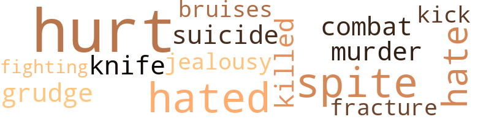

She Knew No Evil, by Arnold, Ethel Nishua (1952)
8 music-related terms matched in this text.
Most frequent terms in this topic: dance (2); music (2); kick (1); piano (1); dancing (1)
dance.n.01
Definition: an artistic form of nonverbal communication
| word | sentence |
|---|---|
| dance | " Er - you dance beautifully , Mrs. Winston , " he ventured as the dance ended . |
dance.v.02
Definition: move in a pattern; usually to musical accompaniment; do or perform a dance
| word | sentence |
|---|---|
| dancing | Kimber was dancing with the elderly Doctor James . |
dance.v.03
Definition: skip, leap, or move up and down or sideways
| word | sentence |
|---|---|
| dance | " Er - you dance beautifully , Mrs. Winston , " he ventured as the dance ended . |
kick.v.04
Definition: kick a leg up
| word | sentence |
|---|---|
| kick | " He can kick her so-and-so out as soon as she has that baby , " Greta snapped . |
music.n.01
Definition: an artistic form of auditory communication incorporating instrumental or vocal tones in a structured and continuous manner
| word | sentence |
|---|---|
| music | He was glad that the music had stopped . |
| music | The sound was like pleasant ripples of music . |
piano.n.01
Definition: a keyboard instrument that is played by depressing keys that cause hammers to strike tuned strings and produce sounds
| word | sentence |
|---|---|
| piano | There were full-length mirrors , a big grand piano , and a large console combination . |
score.n.02
Definition: a written form of a musical composition; parts for different instruments appear on separate staves on large pages
| word | sentence |
|---|---|
| score | So when that Valerie tole me where you lived , I beat it over here to settle a score wid her . " |
27 violence-related terms matched in this text.
Most frequent terms in this topic: hurt (8); spite (3); hated (3); hate (2); suicide (1)
battle.v.01
Definition: battle or contend against in or as if in a battle
| word | sentence |
|---|---|
| combat | Her uncle probably tried to combat the selfishness and slyness he evidently saw developing in her . |
bruise.n.01
Definition: an injury that doesn't break the skin but results in some discoloration
| word | sentence |
|---|---|
| bruises | You only suffered a few bruises and a very bad shock . |
fight.v.02
Definition: fight against or resist strongly
| word | sentence |
|---|---|
| fighting | She could see that he was fighting her with all that was in him . |
fracture.n.01
Definition: breaking of hard tissue such as bone
| word | sentence |
|---|---|
| fracture | " It 's pretty hard to tell right now , " replied the older physician , " but as far as I can see , there 's no concussion or fracture . |
grudge.n.01
Definition: a resentment strong enough to justify retaliation
| word | sentence |
|---|---|
| grudge | But one thing was sure ; he held a grudge against her , and some way he would try to settle the score . |
hate.v.01
Definition: dislike intensely; feel antipathy or aversion towards
| word | sentence |
|---|---|
| hate | " I hate to have to run out on two such nice young ladies , " said the doctor , rising to his feet , " but I 've got to get back to the office . |
| hated | She had hated his very guts . |
| hate | She 'd hate to have to go to jail and stay there until she was a colorless , drab figure , unwanted in the gay life ' of the world . |
| hated | She hated this small hick town , and nothing could make her like it . |
| hated | Although he hated to depend so much on Susan 's friendship , he had no one else . |
injury.n.01
Definition: any physical damage to the body caused by violence or accident or fracture etc.
| word | sentence |
|---|---|
| hurt | Susan knew that Gerald was n't happy , and the knowledge hurt deeply . |
jealousy.n.01
Definition: a feeling of jealous envy (especially of a rival)
| word | sentence |
|---|---|
| jealousy | He suddenly thought of Kimber 's jealousy of her . |
kick.v.04
Definition: kick a leg up
| word | sentence |
|---|---|
| kick | " He can kick her so-and-so out as soon as she has that baby , " Greta snapped . |
kill.v.10
Definition: cause the death of, without intention
| word | sentence |
|---|---|
| killed | Her first husband was killed by the cops . |
knife.n.02
Definition: a weapon with a handle and blade with a sharp point
| word | sentence |
|---|---|
| knife | The young doctor drew back to strike him , but the man whipped out a long , hideous-looking knife . |
malice.n.01
Definition: feeling a need to see others suffer
| word | sentence |
|---|---|
| spite | Although he suspected that Susan would be upset over his marriage , he now knew it , in spite of her efforts to cover up her true feelings . |
| spite | In spite of all this , it was easy to see why Doctor Winston had n't chosen her as his bride . |
| spite | In spite of everything , however , he still had a soft spot in his heart for her , although he had to admit that he could n't understand her , nor her reasons for doing some of the things she did . |
murder.n.01
Definition: unlawful premeditated killing of a human being by a human being
| word | sentence |
|---|---|
| murder | He went on : " First , there was the baby that she tried to murder . |
pain.v.02
Definition: cause emotional anguish or make miserable
| word | sentence |
|---|---|
| hurt | " Dearest , I 've hurt you so much , " he whispered in her ear as he held her closely in his arms . |
| hurt | But she went on doggedly , " Losing Gerald has n't hurt half as much as knowing the type of person I 've lost him to . " |
| hurt | He hoped that his great need for her was understood and would n't hurt her too much . |
| hurt | Susan knew that Greta had hurt him and she said quickly , as she grasped his hands , " Never mind Greta , Gerald . |
| hurt | Doctor Winston was genuinely hurt by Kimber 's attitude toward their son . |
| hurt | It hurt her pride and vanity that a mere infant had become the center of everything . |
| hurt | The thought of having hurt Susan made him flinch . |
suicide.n.01
Definition: the act of killing yourself
| word | sentence |
|---|---|
| suicide | Had she committed suicide ? |
8 religion-related terms matched in this text.
Most frequent terms in this topic: heaven (4); devil (1); praise (1); God (1); Heaven (1)
eden.n.01
Definition: any place of complete bliss and delight and peace
| word | sentence |
|---|---|
| heaven | " And , for heaven 's sake , do n't worry about any more tricks . |
| heaven | For heaven 's sake , Evelyn ! |
| Heaven | " Heaven 's above , Evelyn ! " |
| heaven | " Well , for heaven 's sake ! |
| heaven | " For heaven 's sake ! |
god.n.03
Definition: a man of such superior qualities that he seems like a deity to other people
| word | sentence |
|---|---|
| God | He touched his son 's soft , cool cheek with his lips , and whispered , " Goodnight , Gerald Junior , and may God bless you , son . " |
praise.n.02
Definition: offering words of homage as an act of worship
| word | sentence |
|---|---|
| praise | Anyone but Kimber might have been slightly embarrassed by such open praise , but Kimber enjoyed every word of it . |
satan.n.01
Definition: (Judeo-Christian and Islamic religions) chief spirit of evil and adversary of God; tempter of mankind; master of Hell
| word | sentence |
|---|---|
| devil | " I 'm married to a devil ! " |